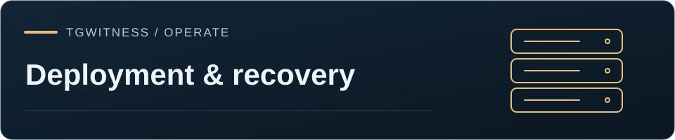

Référence / Preuves
Telegram · Stockage et restauration
Sauvegardes, transfert des anciens fichiers vers votre cloud, copies sous Object Lock et restauration sur une nouvelle machine.
TgWitness / Documentation · Déploiement et restauration

Le panneau distingue trois tâches :
| Mission | Fonctionnalités |
|---|---|
| Effectuez une sauvegarde | Copiez le journal signé, les points de contrôle, les fichiers conservés et les exportations en file d'attente vers la destination S3 configurée. |
| Espace local gratuit | Copiez les anciennes pièces jointes sélectionnées vers S3 ou un serveur distant rclone, relisez-les dans leur intégralité, vérifiez les octets chiffrés, puis supprimez la copie locale vérifiée. |
| Conserver une copie à titre de preuve | Configurez S3 Object Lock et vérifiez le statut de conservation renvoyé. Le service doit confirmer le mode et la date demandés. |
La libération d’espace ne supprime ni ne réécrit jamais le journal signé. Chaque pièce jointe conserve son image d’origine SHA-256 ainsi qu’un accusé de réception de récupération. Une compression gzip facultative est effectuée avant le chiffrement authentifié. Les noms de fichiers dans le cloud ne contiennent pas de noms Telegram, d’identifiants de discussion ni de noms de pièces jointes d’origine. Une pièce jointe peut atteindre 32 Gio.
Une réponse de téléchargement ne constitue pas à elle seule une autorisation de suppression d’un fichier. TgWitness télécharge l’objet chiffré dans son intégralité, vérifie sa taille et SHA-256, enregistre le reçu, puis vérifie à nouveau les octets locaux juste avant la suppression. Un échec de téléchargement, une lecture différente ou un transfert annulé laisse le fichier local en place. Si une sauvegarde de preuves activée n’a pas encore copié ce fichier, la suppression attend également que cela soit fait.
Sur cette page
Lorsque le disque se remplit#
Le téléchargement des pièces jointes se met en pause sous le seuil de Paramètres → Pièces jointes → espace disque libre (1 GiB par défaut), en conservant la file d’attente. Les observations textuelles continuent. Cela ne dépend pas des notifications : les désactiver ne supprime ni la réserve de téléchargement ni les protections du stockage.
Pour intervenir plus tôt, activez Exécuter automatiquement, choisissez Supprimer le fichier local pour libérer de l’espace et activez Lancer un transfert supplémentaire lorsque l’espace disque est faible. Par défaut, cette règle facultative démarre sous 5120 MiB libres et traite les fichiers par lots jusqu’à atteindre 10240 MiB. Les deux seuils sont configurables. La destination, l’âge minimal, la taille des lots, la vérification par relecture complète et les prérequis de sauvegarde des preuves sont ceux d’une exécution manuelle. La règle n’active jamais une destination seule. Les contrôles ont lieu toutes les 30 secondes ; une erreur ou l’absence de progrès reporte le prochain essai de cinq minutes. L’état et l’heure de nouvelle tentative survivent au redémarrage. Quand la règle est inactive, les passages planifiés gardent leur intervalle normal.
Le panneau affiche l’espace libre, la réserve d’empaquetage, l’activation de la règle et les fichiers ignorés faute d’espace temporaire. L’empaquetage et la restauration vérifient leur besoin maximal d’espace temporaire avant de commencer, puis l’espace disponible pendant l’écriture. La réserve correspond au réglage des téléchargements, avec un minimum de 64 MiB pour le stockage. Ces contrôles ne constituent pas un quota du système de fichiers : un autre processus peut consommer de l’espace entre deux contrôles.
Gzip compresse sans perte les objets distants ; il ne réduit pas le journal actif et ne crée pas d’archives locales. Les JPEG, vidéos et ZIP peuvent à peine diminuer, voire grossir légèrement. Avec la compression, l’empaquetage peut nécessiter temporairement environ deux fois la taille de la pièce jointe, plus la réserve. Choisissez un seuil assez précoce pour les plus gros fichiers. Un fichier trop volumineux est conservé et signalé ; les plus petits et les copies distantes déjà vérifiées peuvent encore libérer de l’espace. Une copie vérifiée permet de retirer le fichier local sans nouveau fichier d’empaquetage. La restauration nécessite aussi de l’espace temporaire et peut être refusée tant qu’il manque.
Sans fichier admissible à déplacer ou destination configurée, TgWitness ne peut pas récupérer d’espace automatiquement. La gestion du stockage ne tronque et ne réécrit jamais le journal signé. Celui-ci a toujours besoin d’espace pour de nouvelles observations textuelles.
Connecter une destination#
Dans Extras → Stockage et espace disque → Gérer le stockage, choisissez la tâche et la destination, enregistrez-la, puis sélectionnez Tester le téléchargement et l'envoi. Le test envoie une petite sonde aléatoire et la relit ensuite. Il n'utilise pas de contenu Telegram.
Pour S3, utilisez le point de terminaison, la région et le compartiment réels du fournisseur. Wasabi, Backblaze, Cloudflare R2 et d’autres services compatibles utilisent les mêmes paramètres S3. Une API compatible ne garantit pas à elle seule la prise en charge d’Object Lock. Le mode « Governance » peut permettre à un administrateur autorisé de contourner la conservation ; le mode « Compliance » impose des contraintes différentes. Vérifiez l’état d’Object Lock renvoyé avant de vous fier à la conservation.
Pour une destination rclone, créez un serveur distant à l’aide de la configuration du fournisseur rclone, puis
collez la section [name] dans le panneau. L’assistant installé prend en charge
MEGA, Google Drive, OneDrive, Dropbox, Box, pCloud et les autres fournisseurs affichés dans
le sélecteur. Les identifiants sont enregistrés dans le coffre-fort chiffré de cet espace de travail. Les
actualisations OAuth sont réenregistrées dans le coffre-fort. Les identifiants ne sont pas ajoutés aux
événements du journal ni inclus dans les téléchargements de récupération.
L'assistant est installé au sein de l'espace de travail, avec une version épinglée et SHA-256. Il n’est pas ajouté au PATH système. Les fichiers de configuration et les fichiers de travail sont des fichiers temporaires au sein de cet espace de travail. Les connexions à distance basées sur des commandes et sur des fichiers locaux sont refusées. rclone nécessite actuellement une route Direct explicitement sélectionnée pour les requêtes externes. Utilisez le stockage S3 natif pour une route SOCKS5 ou HTTP d’un espace de travail ; rclone ne contourne pas silencieusement une route indisponible.
Conservez le fichier de restauration#
Sélectionnez « Enregistrer le fichier de récupération après la copie des fichiers » et conservez-le dans un emplacement distinct de celui de l’installation. Il contient la clé de déchiffrement et les reçus d’objets signés, vous devez donc le traiter comme une sauvegarde de clé privée. Conservez également séparément la configuration distante d’origine et les identifiants de destination. Un fichier de récupération créé avant une copie ultérieure ne contient pas le reçu de ce fichier ultérieur.
L’empreinte digitale de la clé de signature doit déjà avoir été enregistrée séparément. Une signature vérifiée uniquement par rapport à la clé fournie dans le même fichier ne permet pas d’établir à qui appartient le fichier de récupération.
Pour récupérer des reçus de stockage manquants dans un espace de travail existant, ouvrez « Récupérer des fichiers à partir d’un fichier de récupération enregistré » et sélectionnez le fichier. Le panneau vérifie la signature et exige la même clé de signature de l’espace de travail. Il refuse de remplacer une clé de stockage différente. Choisissez ensuite « Restaurer tous les fichiers ». La restauration suspend la règle de stockage automatique afin que le prochain cycle programmé ne puisse pas supprimer immédiatement à nouveau les fichiers restaurés. Réactivez la règle lorsque vous n’avez plus besoin des copies locales.
La restauration vérifie le texte chiffré, authentifie le déchiffrement, décompresse si
nécessaire et vérifie le texte en clair d'origine SHA-256 avant de placer un fichier dans media/.
Un objet distant corrompu ne remplace jamais un fichier local. Un fichier local existant contenant
des octets différents est conservé à des fins de vérification plutôt que d'être écrasé.
Récupération après la perte de l'installation#
Installez TgWitness sur une autre machine. Utilisez le fichier de récupération privé, l'empreinte digitale enregistrée séparément et les identifiants de destination d'origine :
python -m tgwitness.storage recover \
--recovery storage-recovery.json \
--fingerprint TRUSTED_WORKSPACE_SHA256 \
--credentials original-rclone.conf \
--output recovered-attachmentsPour S3, --credentials renvoie vers un fichier JSON privé contenant access_key et
secret_key; le fichier de récupération signé fournit les paramètres de destination.
La commande utilise une connexion externe directe et télécharge l’assistant épinglé
lorsqu’un distant rclone en a besoin. Elle refuse un répertoire de sortie existant.
Les octets d'origine récupérés sont écrits dans recovered-attachments/media/, nommés d’après
leur SHA-256. recovery-log.jsonl est un enregistrement non signé des opérations de récupération.
La commande ne recrée pas un journal signé perdu ni sa clé de signature. Conservez une
sauvegarde complète de l’espace de travail pour ces éléments. Un fichier de récupération de stockage n’est pas une sauvegarde complète de l’espace de travail
.
Bot opérateur et notifications de fin d'opération#
Le bot Telegram appartient à l’opérateur. Créez-le via BotFather et configurez son jeton, le chat de destination et les identifiants Telegram explicitement autorisés dans le panneau de configuration. L’ expéditeur et le chat doivent correspondre. Les messages transférés et les commandes provenant d’autres bots sont ignorés.
/status et /stats sont disponibles en mode par défaut « statut uniquement ». Le
mode de contrôle optionnel ajoute /pause, /resume et /copy. /copy sollicite la
tâche de stockage configurée ; cela ne signifie pas que le téléchargement à distance est déjà terminé. Les commandes
ne peuvent pas fournir d’URL, de fichiers ou de programmes shell arbitraires.
Utilisez les paramètres de notification distincts pour les alertes et l’achèvement des tâches. Les notifications d’achèvement distinguent une exportation de compte comportant des lacunes d’une exportation complète, et affichent l’historique et le nombre d’éléments stockés. Les extraits de messages ne sont pas inclus, sauf si cette option est activée séparément dans les paramètres de notification. Le sélecteur de services est généré à partir du catalogue Apprise réellement installé plutôt qu’à partir d’un ensemble fixe d’exemples de fournisseurs.